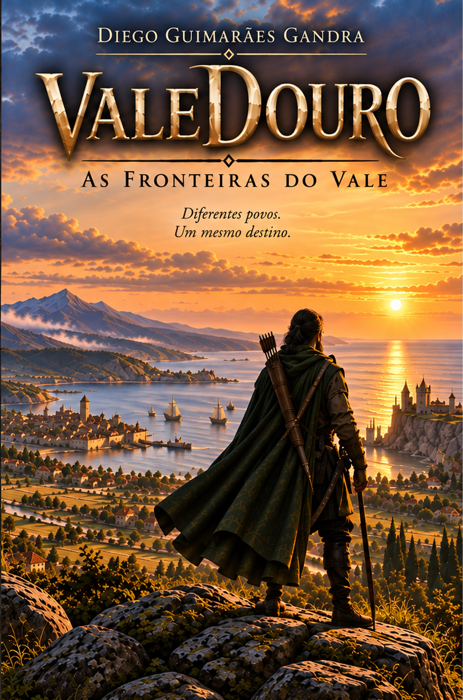
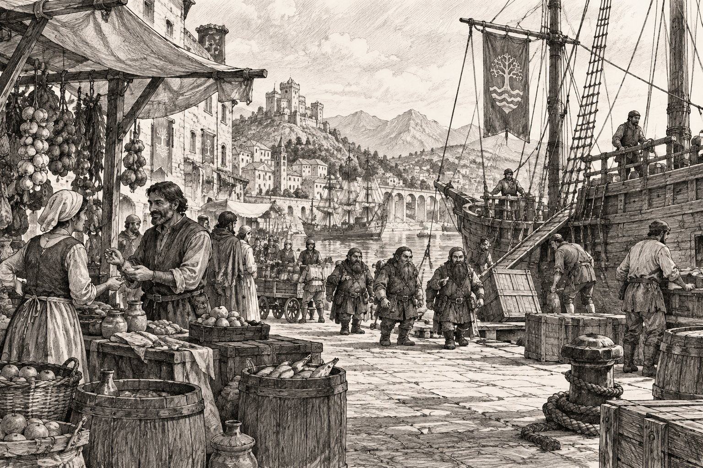
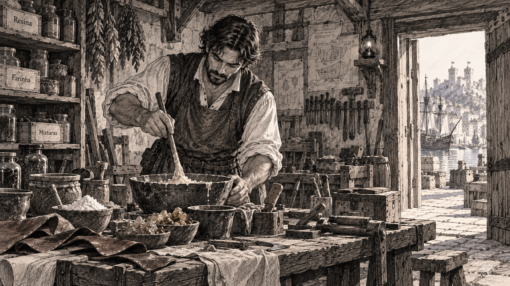
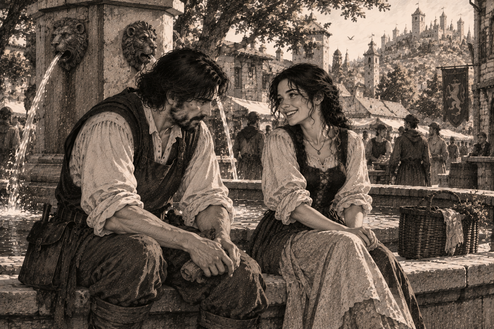
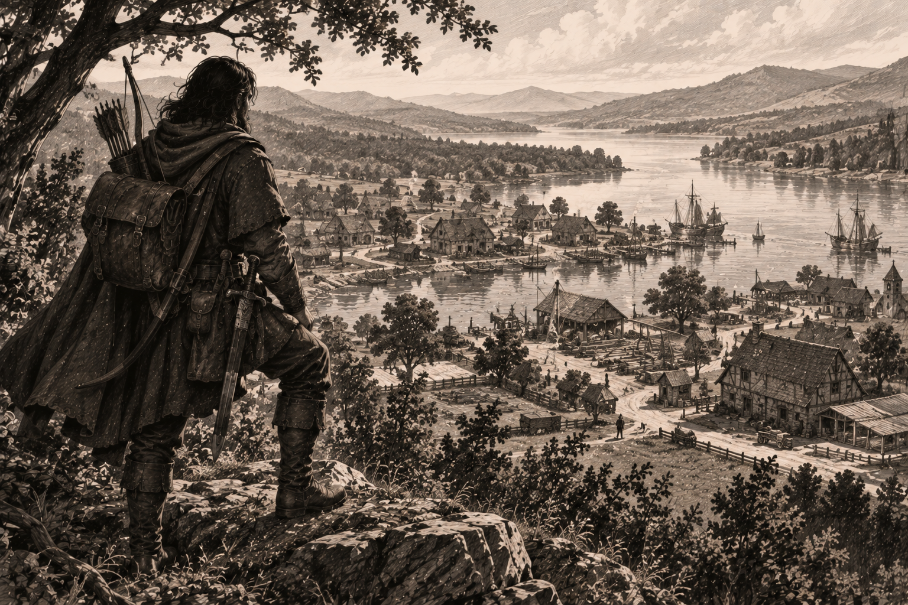
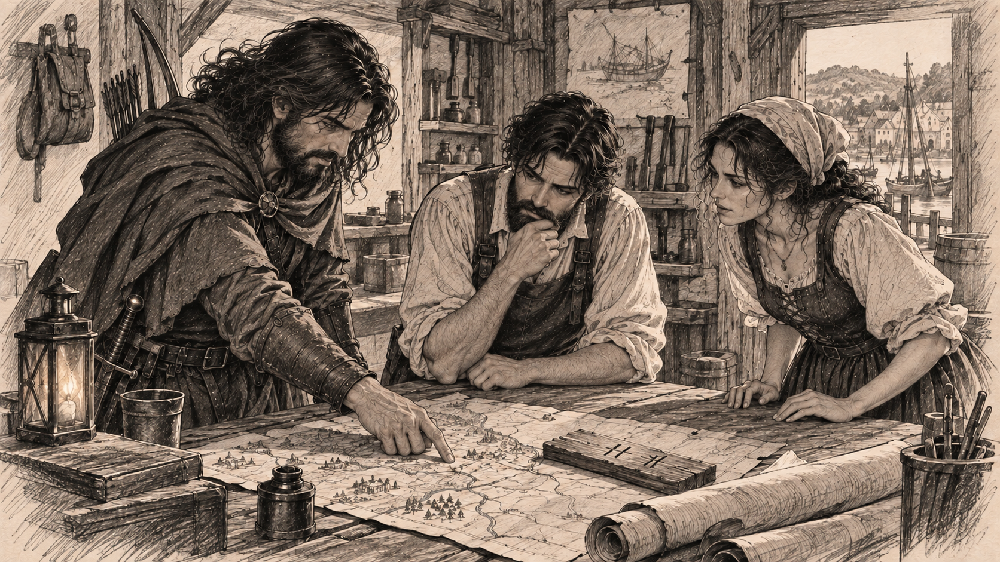
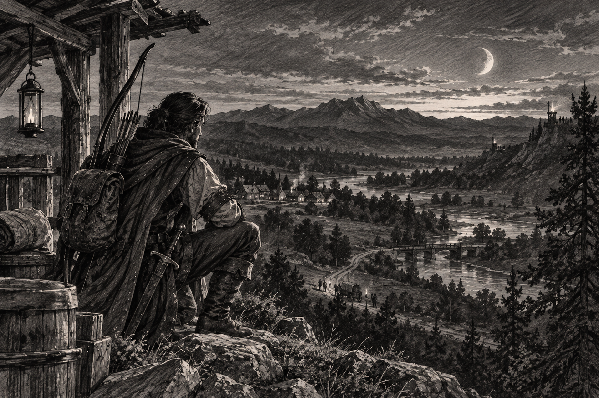
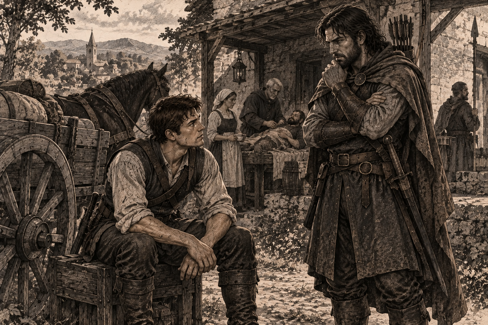

VALEDOURO · LIVRO 1
As Fronteiras do Vale
Antes de existir um jogo, foi preciso criar um universo.
ValeDouro nasceu da construção de um mundo para servir de cenário a uma experiência de RPG. Para que o jogador pudesse encontrar cidades, povos, conflitos e personagens com passado e motivações próprias, esse mundo precisava ter história.
POR TRÁS DA OBRA
Antes do jogo, havia uma história.
ValeDouro nasceu da construção de um mundo para servir de cenário a uma experiência de RPG. Para que o jogador pudesse encontrar cidades, povos, conflitos e personagens com passado e motivações próprias, esse mundo precisava ter história.
Foi assim que surgiram acontecimentos que se passam muito antes do tempo vivido pelos jogadores: histórias de formação do Vale, disputas de fronteira, encontros entre povos e personagens cujas decisões ajudaram a construir o mundo encontrado posteriormente no RPG.
Em determinado momento, ficou claro que essas histórias não deveriam permanecer apenas como pano de fundo do jogo. Elas tinham personagens, conflitos e perspectivas suficientes para serem contadas por si mesmas.
Dessa história anterior ao jogo nasceram os livros de ValeDouro.
As Fronteiras do Vale é a primeira obra publicada desse universo e apresenta ao leitor parte das origens de um mundo que, muito tempo depois, poderá também ser explorado e vivido pelos jogadores.
CONTEÚDO DIGITAL
Além das páginas.
Algumas imagens do livro, para seu deleite, leitor ou curioso.






